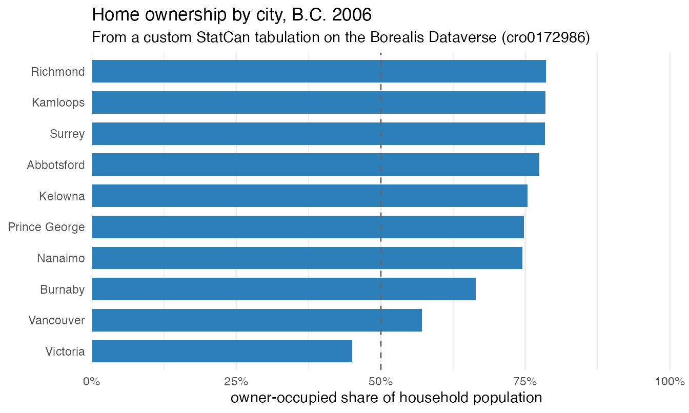

The official StatCan census index (see
vignette("getting-started")) is not the only place Beyond
20/20 tables live. The Borealis Dataverse
hosts a large collection of custom StatCan tabulations
— cross-tabulations produced on order and deposited by researchers,
sitting outside the standard product line. Unfortunately many are simply
re-posts of standard-release StatCan data, which clogs up the Borealis
repository and makes discovering the truly new tables cumbersome, but
~3,000 are custom tables found nowhere else. canivt can
browse that catalogue and download from it exactly like the StatCan
one.
This vignette browses the Borealis catalogue, downloads one custom tabulation, and draws a graph from it.
An API key
The Borealis search (building the catalogue) needs a
free API key. Create one from your Borealis account (API
token tab) and put it in .Renviron (or set it for the
session):
Sys.setenv(BOREALIS_DATAVERSE_KEY = "xxxxxxxx-xxxx-xxxx-xxxx-xxxxxxxxxxxx")The key is needed to build the catalogue and to download a file.
1. Browse the Borealis catalogue
borealis_ivt_catalogue() searches the Dataverse for
every deposited .ivt and returns one row per file. The
search is slow (~90 s, thousands of files), so it is cached after the
first call; pass refresh = TRUE to rebuild it.
catl <- borealis_ivt_catalogue()
dim(catl)
#> [1] 3300 11
names(catl)
#> [1] "key" "file" "file_stem" "file_id"
#> [5] "dataset_doi" "dataset_name" "download_url" "size_in_bytes"
#> [9] "md5" "published_at" "file_type"Each file is addressed by a canonical key —
<doi-token>/<file-stem> — because the same
filename is reused across datasets (so it folds in the deposit’s DOI to
stay unique). The numeric file_id is always unique on its
own.
Filter it like any tibble. Here we look for a 2006 British Columbia
custom tabulation of housing tenure by selected characteristics (order
cro0172986):
library(dplyr)
hits <- catl |>
filter(grepl("cro0172986", file)) |>
select(key, file, file_id, size_in_bytes)
hits
#> # A tibble: 2 × 4
#> key file file_id size_in_bytes
#> <chr> <chr> <chr> <dbl>
#> 1 …/cro0172986_ct.7-2006-popu… cro0172986_ct.7-2006-population.ivt … 995468
#> 2 …/cro0172986_ct.8-2006-priv… cro0172986_ct.8-2006-private_hous… … 1358173(The key DOI token and numeric file_id are
the deposit’s real identifiers — shown abbreviated here; your
borealis_ivt_catalogue() will fill them in.)
2. Download and decode one
Pass a one-row catalogue slice to
borealis_ivt_download(). It fetches the file from the
Dataverse access API into the ivt cache and returns the local
.ivt path, which read_ivt() decodes like any
other table:
path <- borealis_ivt_download(hits[1, ]) # or a bare file_id
tab <- read_ivt(path)
tab
#> ── IVT table NA ──
#> NA
#> 102839 cells | 581 geographies | 3 dimensions | 2 footnotes
#> geography labelled by name + uid(This particular custom order carries no inline product id or title —
hence the NA header — but the data and the dimension
structure decode fine, as we’ll see.)
get_statcan_ivt() is the one-stop alternative: give it a
Borealis key or file_id and it downloads,
decodes, caches the Parquet and returns an Arrow dataset — it resolves
an id against the StatCan catalogue first and falls back to Borealis, so
the same call works for either source.
ds <- get_statcan_ivt("cro0172986_ct.7-2006-population") # by file stem / keyThe table is
Geography (581 BC census divisions & subdivisions) × Tenure (Owner / Renter / Band housing) × Characteristics (79),
with the population in private households in value.
3. Query and graph
We pull the owner- vs renter-occupied population (the “Total - Sex of the population” characteristic) for a set of BC cities:
cities <- c("Vancouver, CY", "Surrey, CY", "Burnaby, CY", "Richmond, CY",
"Victoria, CY", "Kelowna, CY", "Abbotsford, CY", "Nanaimo, CY",
"Kamloops, CY", "Prince George, CY")
res <- ivt_tidy(tab) |>
filter(geo_name %in% cities,
characteristics == "Total - Sex of the population",
tenure %in% c("Owner", "Renter")) |>
select(geo_name, tenure, value)For a self-contained example, those real decoded 2006 counts are inline here:
A quick tidy — the owner share of each city’s household population — and an ordered bar chart. In 2006 Surrey and the Fraser Valley are strongly owner-occupied, while central Vancouver and Victoria are the most renter-heavy:
library(ggplot2)
library(dplyr)
#>
#> Attaching package: 'dplyr'
#> The following objects are masked from 'package:stats':
#>
#> filter, lag
#> The following objects are masked from 'package:base':
#>
#> intersect, setdiff, setequal, union
res |>
mutate(city=sub(", CY$", "", geo_name)) |>
mutate(share=value/sum(value),.by=city) |>
filter(tenure=="Owner") |>
ggplot(aes(share, reorder(city,share))) +
geom_col(fill = "#2c7fb8", width = 0.72) +
geom_vline(xintercept = 0.5, linetype = 2, colour = "grey40") +
scale_x_continuous(labels = function(x) paste0(x * 100, "%"),
limits = c(0, 1), expand = expansion(mult = c(0, 0.02))) +
labs(y = NULL, x = "Share of owner households",
title = "Home ownership by city, B.C. 2006",
caption = "Data: Custom StatCan tabulation on the Borealis Dataverse (cro0172986)")
Recap
library(canivt); library(dplyr); library(ggplot2)
catl <- borealis_ivt_catalogue() # 1. browse (needs an API key)
hits <- catl |> filter(grepl("cro0172986", file))
path <- borealis_ivt_download(hits[1, ]) # 2. download one custom table
tab <- read_ivt(path) # decode it like any .ivt
res <- ivt_tidy(tab) |> filter(...) # 3. query + graph
ggplot(res, ...) + geom_col()Borealis and the StatCan catalogue are complementary sources for the
same reader: whichever a table comes from, read_ivt()
decodes it through one path. See ?borealis_ivt_catalogue
and ?get_statcan_ivt for the full API, and
vignette("getting-started") for the StatCan-catalogue
workflow.